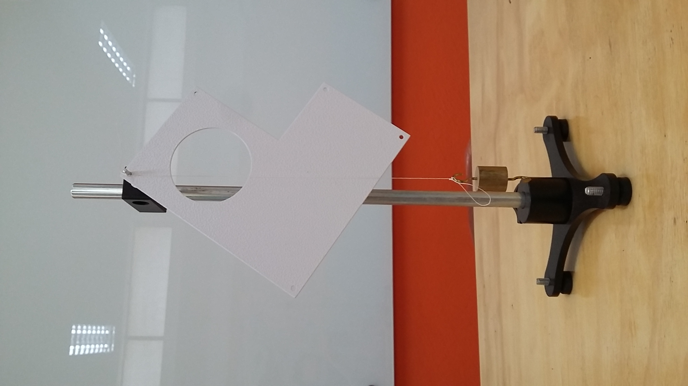
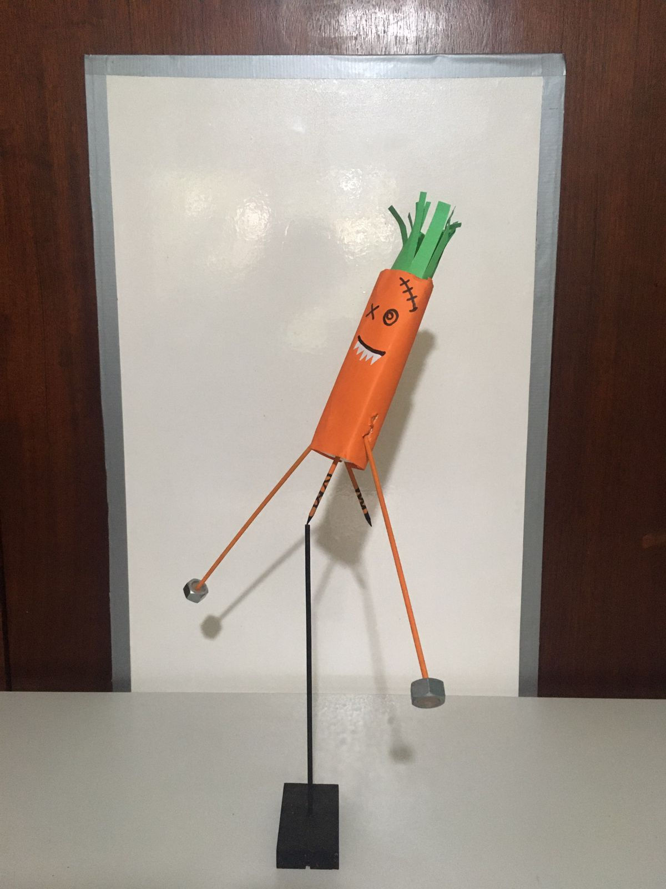

Centro de gravidade

Talvez você já tenha ouvido falar de centro de massa ou centro de gravidade ou ainda baricentro, sabe o que é isso ou o que significa? Se não sabe ou nunca ouviu, vamos explicar de uma maneira bem legal.
Tudo ao nosso redor tem tamanho. Por exemplo, eu e você temos pescoço, cabeça, braços, pernas, cada parte do nosso corpo possui um formato diferente, as portas mais comuns são retangulares, rodas são redondas, uma folha de papel amassada tem formato estranho, cada coisa tem uma forma diferente.
Porém há problemas que a forma de um corpo não importa muito. Por exemplo, se eu disser que um carro se deslocou por 300 metros, eu não estou preocupado em dizer como ele fez isso, ou se ele é quadrado, retangular, grande ou pequeno, se percorreu a distância capotando ou sendo puxado por outro carro, o que me interessa é a informação de 300 metros. Em física quando vamos tratar de problemas desse tipo, onde a dimensão não importa, consideramos o corpo/objeto como um ponto material.
Agora imagine que você está tentando equilibrar um objeto sobre o seu dedo, agora o tamanho e sua forma importam! Dependendo do formato do objeto e de onde você tenta equilibrá-lo, ele pode rodar e cair. Nessas situações, dizemos que o objeto é um corpo extenso.
A simulação a seguir representa um corpo extenso (no caso, uma barra). Dependendo de onde distribuímos os pesos, o corpo fica em equilíbrio ou não.
A rigor, todo corpo pode ser considerado um conjunto de muitas partículas que são atraídas pela ação da gravidade da Terra. A soma dos pesos de cada uma dessas partículas determina o peso do corpo. Mas então como fazemos para determinar o peso da cada uma dessas partículas para saber o peso de um corpo? Quando subimos na balança por exemplo, será que ela faz essa somatória das infinitas células e tecidos do nosso corpo?
Não é muito bem assim. Na verdade, ao se estudar o equilíbrio de um corpo extenso, podemos determinar as condições de equilíbrio por meio de uma posição conhecida como centro de gravidade ou centro de massa. Quando o valor da aceleração da gravidade não varia muito ao longo do corpo (o que acontece na maior parte das situações na Terra), o centro de gravidade coincide com o centro de massa de um corpo. Esta posição é um ponto hipotético onde podemos dizer que toda a massa do corpo está concentrada ali.
Para um sistema de \(N\) partículas, a posição do centro de massa é representada pelo vetor \(\vec{r}_{\text{CM}}\). E este vetor é calculado por
\(\displaystyle \vec{r}_{\text{CM}} = \frac{m_1\vec{r}_1+m_2\vec{r}_2 \ldots m_N \vec{r}_N}{m_1+m_2+\ldots+m_N}\)
onde \(m_i\) são as massas de cada partícula e \(\vec{r}_i\) são suas posições.
A aplicação a seguir ilustra este cálculo para o caso de 3 partículas pontuais distribuídas num plano (ou seja, a coordenada \(z\) da posição da partícula é zero) (Autor Chris Mizell). Nela, você pode alterar a posição e a massa das partículas onde, quanto maior a massa, maior o círculo que cobre a partícula. O centro de massa é calculado automaticamente e representado na figura.
Imaginando agora que um conjunto muito, muito grande de partículas forma um corpo extenso, a expressão acima para o cálculo da posição do centro de massa se transforma em:
\(\displaystyle x_{\text{cm}}=\frac{1}{M}\int x dm, \;\; y_{\text{cm}}=\frac{1}{M}\int y dm, \;\; z_{\text{cm}}=\frac{1}{M}\int z dm\)
Neste caso, a forma do corpo e a distribuição de como a massa é distribuída ao longo dele tem um papel importante na localização do centro de massa. Se o corpo tem uma densidada homogênea \(\rho\) então as expressões acima pode ser reescritas como
\(\displaystyle x_{\text{cm}}=\frac{1}{V}\int x dV, \;\; y_{\text{cm}}=\frac{1}{V}\int y dV, \;\; z_{\text{cm}}=\frac{1}{V}\int z dV\)
onde \(V\) é o volume do corpo.
A aplicação a seguir ilustra a localização do centro de massa para um conjunto de 3 corpos extensos (quadrilátero, triângulo e círculo) (Autor Antonio Di Muro).
Nela, você pode tanto alterar as formas e dimensões dos corpos como a densidade deles (neste caso, massa por unidade de área, \(\sigma\)). A posição do centro de massa para o conjunto é indicada ao clicar em “View the solution”. Varie a forma e a densidade dos corpos e veja como o centro massa muda.
O exemplo acima ilustra a localização do centro de massa para um conjunto de corpos e a mudança dele quando os corpos são alterados (localização, forma e densidade). O mesmo acontece quando adicionamos outras partículas a um certo corpo. Para a nova combinação de corpos, teremos uma nova posição do centro de massa. O vídeo abaixo ilustra muito bem isso, quando adiciona-se corpos a uma barra de madeira. Neste caso, o novo arranjo é equilibrado ao fazer o ponto de apoio coincidir com o centro de massa do conjunto.
A seguir temos mais uma ilustração deste processo. Aqui usamos porcas de metal que estão coladas a palitos de madeira. Esses palitos estão conectados a um pedaço de isopor, a “cenoura-monstro”. A arte da cenoura foi feita pela Profa. Maria José Santos Pompeu Brasil. Todo este conjunto está equilibrado sobre um suporte preto de madeira.
Se você chegou até aqui e entendeu os conceitos fundamentais sobre centro de massa ou centro de gravidade, pode imaginar como é possível equilibrar a “cenoura-monstro” na ponta do suporte. As porcas que representam as mãos da “cenoura-monstro” concentram a maior parte da massa de todo conjunto. Assim, o centro de massa da “cenoura-monstro” coincide basicamente com o centro de massa das duas porcas. Assim, ao fazermos o centro de massa das porcas coincidir com topo do suporte preto, faremos a “cenoura-monstro” ficar em equilíbrio.
Tentem reproduzir esta montagem, fazendo a arte de vocês, e compartilhem com a gente!

A animação a seguir é um modelo para a “cenoura-monstro” (Autor Vitor Coluci). A simulação permite variar o comprimento e posição dos braços. Para cada posição, o centro de massa (CM) do conjunto é calculado (considerando desprezível a massa das partes da “cenoura-monstro”, exceto a das mãos). Altere a posição das mãos para fazer com que o conjunto fique em equilíbrio.
Quando arremessamos um corpo no ar (um martelo, por exemplo), ele pode executar um movimento combinado de translação e rotação. É difícil descrever a trajetória do corpo em rotação e translação ao mesmo tempo. Se ao menos pudéssemos descrevê-la como um ponto seria mais fácil…E é essa uma das propriedades interessantes do centro de massa ! Como podemos concentrar hipoteticamente toda a massa do corpo em um único ponto (centro de massa), podemos descrever seu movimento de translação olhando para o movimento do centro de massa. O vídeo a seguir ilustra essa propriedade.
Para os curiosos
Deixamos como sugestão para vocês encontrarem o centro de gravidade de um triângulo similar ao vídeo Centro de Gravidade e ao experimento que temos disponível no \(\vec{E}\hspace{-1.1mm}\times\hspace{-1.1mm}\vec{p}\mathcal{L}0\mathbb{R}a\).
Nos corpos homogêneos (onde a densidade de massa é igual em todas as regiões), o centro de gravidade coincide com o centro geométrico do corpo. Porém, nem todos os corpos são homogêneos. Por exemplo, é muito comum perceber isso em madeiras. Ao bater um prego em diferentes lugares é possível notar uma densidade maior ou menor, dependendo da madeira e do seu tamanho. Assim, é possível que, mesmo que vocês tentem localizar o centro de massa de objetos simétricos que tiverem em casa usando o centro geométrico, o equilíbrio não seja obtido.